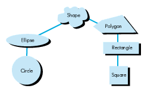
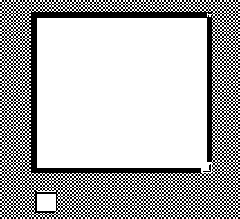
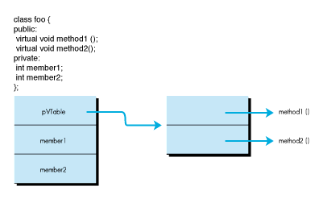

The C++ programming language supports data abstraction and object programming.
Until now, using C++ to its full capacity in stand-alone code has not been possible.
This article demonstrates how you can take advantage of two important features of
C++, inheritance and polymorphism, in stand-alone code. An example shows how to
write a window definition function using polymorphism.
In object programming, polymorphism gives programmers a way to solve problems by
beginning with the general and proceeding to the specific. This process is similar to
top-down programming, in which the programmer writes the skeleton of a program to
establish the overall structure and then fills in the details later. Polymorphism
differs from top-down programming, however, in that it produces designs that are
reusable outside the context of the original structure. The attractiveness of reusable
code is one of the reasons object programming is catching on.
The shape hierarchy shown in Figure 1 is one of the most frequently cited examples of
polymorphism.

Figure 1Shape Hierarchy
The most general concept is the shape; all objects in the hierarchy inherit attributes
from the shape. Area, perimeter, centroid, and color are attributes common to all
shapes. Notice that the hierarchy proceeds from the general to the specific:
In C++, concepts are represented as classes. The more abstract the concept, the higher
in the inheritance hierarchy the concept resides. Two key C++ features support
polymorphism: inheritance and virtual member functions. We can use these to develop
more concretely specified shapes and ask questions of any shape about its area,
perimeter, or centroid.
The virtual functions provide a protocol for working with shapes. Here is an example
of the shape hierarchy as it could be represented in C++:
class Shape {
public:
virtual float area(); // Area of the shape.
virtual float perimeter(); // Its perimeter.
virtual Point centroid(); // Its centroid.
};
class Ellipse : public Shape {
public:
virtual float area(); // Area of the shape.
virtual float perimeter(); // Its perimeter.
virtual Point centroid(); // Its centroid.
private:
Point center; // Center of ellipse.
float height; // How high.
float width; // How wide.
};
class Circle : public Ellipse {
public:
virtual float area(); // Area of the shape.
virtual float perimeter(); // Its perimeter.
virtual Point centroid(); // Its centroid.
};
In this implementation, a circle is an ellipse with the additional constraint that its
width and height must be equal.
Once an object of a type derived from Shape has been instantiated, it can be
manipulated with general code that knows only about shapes. The benefit is that, having
written and debugged this general code, you can add more kinds of shapes without
having to alter the general code. This eliminates many potential errors.
MPW C++ is a language translator that translates C++ to C. Programs are compiled by
first being translated to C, after which the MPW C compiler takes over and compiles
the C to object code.
As noted, polymorphism is accomplished by using inheritance and virtual member
functions. How does the C++ compiler decide which function should be called when an
instance of unknown type is used? In the current release of MPW C++, every instance
of an object in an inheritance hierarchy has a hidden data member, which is a pointer
to a virtual function table. Each member function is known to be at a particular offset
in the table. The member functions for the different classes in an inheritance chain are
stored in different tables. The table pointed to is determined at the time of object
creation. (See the sidebar called "Layout of Objects and Their Virtual Functions in
Memory.")So far, nothing in the implementation of virtual functions seems to
preclude their use in nonapplication contexts. Once an object is instantiated, the code
needed to call a virtual function can be executed from any context, including
stand-alone code resources. However, MPW C++ does not currently support a
mechanism to allocate storage for, or to initialize, the virtual function tables in
nonapplication contexts.
As noted above, virtual function tables are required for polymorphism in C++. To
support virtual function tables in stand-alone code, two issues must be resolved:
GLOBAL VARIABLES IN CODE RESOURCES
In MPW C++, virtual function tables live in C global variable space. Unfortunately,
the MPW languages do not support the use of global variables in stand-alone code.
However, Technical Note #256, Stand- Alone Code,ad nauseam , shows how to add
support for global variables in standalone code resources. In simple terms, this
involves allocating storage for the globals, initializing the globals, and arranging for
the proper value to be placed in machine register A5. These functions can be neatly
expressed as a class in C++. The following class, called A5World, provides these
services.
class A5World {
public:
A5World(); // Constructor sets up world.
~A5World(); // Destructor destroys it.
// Main functions: Enter(), Leave().
void Enter(); // Go into our world.
void Leave(); // Restore old A5 context.
// Error reporting.
OSErr Error() { return error; }
private:
OSErr error; // The last error that occurred.
long worldSize; // How big our globals are.
Ptr ourA5; // The storage for the globals.
Ptr oldA5; // Old A5.
};
To use globals, a code resource written in C++ merely creates an instance of an
A5World object. Here is an example:
// Hello_A5World.cp
// Simple code resource that uses global variables.
#include "A5World.h"
// Array of characters in a global.
char global_string[256];
void main()
{
// Temporarily create global space.
A5World ourWorld;
// Check for errors.
if(ourWorld.Error() != noErr)
return;
// We got it; let's go inside our global space.
ourWorld.Enter();
// Use our global variable.
strcpy(global_string, "Hi there!");
debugstr(global_string);
// Time to go home now.
ourWorld.Leave();
// The destructor automatically deallocates
// our global space.
}
The full implementation of class A5World appears on the Developer Essentials disc
(Poly. in Code Resources folder). By itself, this is a useful piece of code.
INITIALIZING THE VIRTUAL FUNCTION TABLES
As noted, MPW C++ is implemented as a language translator (called CFront) that
translates C++ to C. As you might guess, classes are implemented as structs in C, and
member functions are just ordinary C functions. As also noted, the virtual function
tables are implemented as global variables. We have solved the problem of having
globals in stand-alone code, so the remaining issue is how to initialize these tables
with the proper pointers to the member functions.
The initialization of a global variable with a pointer to a function is not supported in
stand-alone code written in MPW languages. This initialization is normally done by the
linker, which creates a jump table, and the current version of the MPW Linker will
not generate jump tables for stand- alone code. Therefore, the only way to initialize
global variables with pointers to code is manually at run time.
To understand the solution to this problem, let's take a look at what CFront does when
it sees a hierarchy of classes with virtual functions. Here is a simple hierarchy of two
classes, Base andDerived:
class Base {
public:
Base();
virtual void Method();
};
class Derived : public Base {
public:
Derived();
virtual void Method();
};
When MPW C++ sees these class definitions, it emits the following C to allocate and
initialize the virtual function tables:
struct __mptr __vtbl__7Derived[]={0,0,0,
0,0,(__vptp)Method__7DerivedFv,0,0,0};
struct __mptr *__ptbl__7Derived=__vtbl__7Derived;
struct __mptr __vtbl__4Base[]={0,0,0,
0,0,(__vptp)Method__4BaseFv,0,0,0};
struct __mptr *__ptbl__4Base=__vtbl__4Base;
The variables __vtbl__4Base[] and __vtbl__7Derived[] are the virtual function
tables for the classes Base and Derived. To support polymorphism in stand-alone
code, this code must be split into two parts: a declaration part and an initialization
part. The initialization part is simply a C function that initializes the tables. The
following code shows how the tables might be transformed for use in stand-alone code:
struct __mptr __vtbl__7Derived[3];
struct __mptr *__ptbl__7Derived;
struct __mptr __vtbl__4Base[3];
struct __mptr *__ptbl__4Base;
void init_vtbls(void)
{
__vtbl__7Derived[1].d = 0;
__vtbl__7Derived[1].i = 0;
__vtbl__7Derived[1].f = (__vptp)Method__7DerivedFv;
__ptbl__7Derived=__vtbl__7Derived;
__vtbl__4Base[1].d = 0;
__vtbl__4Base[1].i = 0;
__vtbl__4Base[1].f = (__vptp)Method__4BaseFv;
__ptbl__4Base=__vtbl__4Base;
}
What we end up with is a declaration of global variables and a simple C function that
must be called before the virtual functions are called. The code transformation shown
is easy to implement. TheDeveloper Essentials disc contains a simple MPW Shell
script and two MPW tools that perform this function. The script is called
ProcessVTables, and the tools are called FixTables andFilterTables.
COMBINING THE CONCEPTS
What remains is to combine the concepts of allocating global variables and initializing
virtual function tables into a single construct. The following code, class
VirtualWorld, based on classA5World, provides these two services.
class VirtualWorld : public Relocatable {
public:
// Constructor sets up world.
VirtualWorld(Boolean worldFloats);
// Destructor destroys it.
~VirtualWorld();
// Main functions; Enter sets A5 to point to
// our world.
// Go into our world.
void Enter();
// Restore old A5 context.
void Leave();
// Error reporting.
OSErr Result() { return error; }
private:
// The last error that occurred.
OSErr error;
// Whether we have to call the vtable init.
Boolean codeFloats;
// How big our globals are.
long worldSize;
// The storage for the virtual world.
Ptr ourA5;
// Old A5.
Ptr oldA5;
};
The constructor for class VirtualWorld requires one parameter, worldFloats, a
Boolean value that tells whether or not the code resource floats between calls. This flag
is used to decide whether or not the virtual function tables need reinitializing on every
call to the code resource. Code resources such as WDEFs do float, and can even be
purged, so this flag is essential. If worldFloatsis false, the virtual function tables
are initialized once in the constructor. This initialization is performed by calling the
function init_vtables(), shown earlier.
The Enter() and Leave() member functions set up and restore the A5 global space,
respectively. If the member variable codeFloats is true, Enter() calls
theinit_vtables() each time.
As in the A5World class, the Error() member function reports error conditions,
which should be checked before assuming the world is set up correctly.
To show off this really cool technique, I have written one of everybody's favorite code
resources, a window definition function, or WDEF, that uses polymorphism. The
example demonstrates how to define a base class for windows that is easy to inherit
from--so you can add a feature to a window while leaving the original window code
untouched.
CLASS WINDOWDEFINITION
Class WindowDefinition forms the template for all other window definitions. Here
is its interface:
class WindowDefinition : public Relocatable {
public:
// Initialize window.
virtual void New(WindowPeek theWindow)
{ itsWindow = theWindow; }
// Destroy window.
virtual void Dispose() {}
// Compute all relevant regions.
virtual void CalcRgns() {}
// Draw the frame of the window.
virtual void DrawFrame() {}
// Draw the goaway box (toggle state).
virtual void DrawGoAwayBox() {}
// Draw window's grow icon.
virtual void DrawGIcon() {}
// Draw grow image of window.
virtual void DrawGrowImage(Rect& growRect) {}
// Do hit testing.
virtual long Hit(Point& whereHit)
{ return wNoHit; }
protected:
// Window we are keeping track of.
WindowPeek itsWindow;
};
WindowDefinition uses methods to respond to all the messages to which a WDEF is
expected to respond. All the methods are just placeholders here, as
WindowDefinition is an abstract base class.
Class WindowDefinition's superclass, Relocatable, provides services to all
handle-based classes, such as locking this, moving it high, and unlocking it. This
class makes the casts to typeHandle that are normally necessary and makes dealing
with handle-based classes pleasant--and safer.
CLASS WINDOWFRAME
The next class to look at isWindowFrame. WindowFrameimplements a basic window that
can be resized, moved, and shown in highlighted or unhighlighted state.
class WindowFrame : public WindowDefinition {
public:
virtual void New(WindowPeek theWindow);
virtual void Dispose();
virtual void CalcRgns();
virtual void DrawFrame();
virtual void DrawGrowImage(Rect& growRect);
virtual long Hit(Point& whereHit);
private:
// Border between content and structure
// boundaries.
RgnHandle itsBorderRgn;
};
The code that makes this window work is included in the full source example on the
Developer Essentials disc.

Figure 3 Class WindowFrame's Window on the Desktop
CLASS ICONWDEF
To implement a window that is iconifiable, we can derive from the class WindowFrame,
and modify its behavior, without having to rewrite the code that implements the
window. All an icon has to do is respond to clicks and be dragged around. So, the class
IconWDef just has to worry about keeping track of whether the window is iconified or
not, and lets the WindowFrame part take care of being a window. Here is the interface
to class IconWDef.
class IconWindowDef : public WindowFrame {
public:
// Window methods.
virtual void New(WindowPeek theWindow);
// We have different regions when iconified.
virtual void CalcRgns();
// We draw an icon if in the iconified state.
virtual void DrawFrame();
virtual long Hit(Point& whereHit);
private:
// State of our window.
Boolean iconified;
// If we've ever been iconified.
Boolean everIconified;
// Flag that says we want to change our state.
Boolean requestingStateChange;
// How many times CalcRgns has been called.
short calcRgnsCount;
// Place to hit to iconify window.
Rect iconifyRect;
// Where to put when iconified.
Point iconifiedLocation;
};
The decision about when to iconify the window is made in theIconWDef's Hit()method.
In the current implementation, if the window's zoom box is hit with the Option key
held down, the window toggles between being an icon and being a window.
This article has shown how to use polymorphism--the combination of inheritance and
run-time binding of functions to objects--in the context of stand-alone code
resources. Issues that had to be resolved were how to provide support for globals in
stand-alone code and how to arrange for the initialization of virtual function tables.
Although the code for the example shows how to use polymorphism for window
definition functions, you can use the same technique to write any type of code resource:
menu definitions, list definitions, control definitions, and even drivers.
ROOM FOR IMPROVEMENT
The code could be improved in two ways:
VirtualWorld that the data can float.VirtualWorld.
CAVEATS
A couple of words of warning are in order. The tools that process the virtual function
tables depend on the way CFront generates the tables. If AT&T or Apple ever decides
to change the way these tables are generated (probably unlikely), the tools
described in the example will probably break. However, it would not be difficult to
modify the tools if changes were made.
Classes inherited from class PascalObject are not supported by the techniques
described in this article. This is because these classes do not implement run-time
binding using virtual function tables. This is not a problem since PascalObjects
were intended only for use with MacApp, and (for now) MacApp can be used only for
applications.
Look at the code on Developer Essentials for more information, and good luck!
For a typical class such as class foo, how does the compiler generate code to call the
proper virtual function at run time? The following class and diagram show how this is
accomplished.
class foo {
public:
virtual void method1 ();
virtual void method2 ();
private:
int member1;
int member2;
};
As shown by the figure, an instance of class foo has three data members. Two of the
members, member1 and member2, are part of the class definition, while a third
member we'll call pVTable is a hidden member automatically created by the
compiler. pVTable is a pointer to a table of function pointers (also automatically
generated by the compiler) that holds pointers to all the functions in the class that are
declared virtual. The code that is generated to call a virtual function is therefore
something like this:
// Code written in C++: myFoo->method1(); /* Becomes this code in C: */ (*myFoo->pVTable[0])();
This is the memory layout for a virtual function table used in single inheritance. For
multiple inheritance, the structures used are more complicated.

Figure 2 Calling Virtual Functions at Run Time
The C++ default storage strategy is to create objects as pointers. As we all know, using
pointers to allocate storage on the Macintosh makes memory management a lot less
efficient. The ability to store data in relocatable blocks allows the Macintosh to use
more of its memory since relocatable blocks can be shuffled around to make space.
Luckily, Apple has extended C++ in a way that allows us to take advantage of the
Macintosh Memory Manager by adding the built-in classHandleObject. The only
restrictions placed on handle-based objects is that they can be used only for
single-inheritance hierarchies. Most object programming tasks, however, can be
handled using single inheritance. To make handle-based objects easier to work with,
here is class Relocatable, a class derived fromHandleObject. Class
Relocatable provides functions for manipulating handle-based objects without the
hassle of all those casts.
class Relocatable : HandleObject {
protected:
void Lock() {HLock((Handle)this);}
void Unlock() {HUnlock((Handle)this);}
void MoveHigh() {MoveHHi((Handle)this);}
SignedByte GetState() {return HGetState((Handle)this);}
void SetState(SignedByte flags)
{HSetState((Handle)this, flags);}
};
PATRICK BEARD of Berkeley Systems, Inc., is a totally rad dude, living in a world
somewhere between hard-core physics and fantasy. He prepared for this lifestyle by
getting a B.S.M.E. at the University of California, Berkeley. He claims native
Californian status, although he's from Illinois. A programming addict who relishes
treading the very edge of what's possible,Pat dreams of writing his own programming
language so he can really express himself. Meanwhile, he has written screen- savers
and sundry compiler hacks, and has helped develop a Macintosh talking interface for
the blind. He's a jazz musician (looking for a rhythm section--any takers?), a snow
skier, snowboarder, and skateboarder, whose motto in life is " Stop and breathe from
time to time." He never puts anything away, fearing an inability to find stuff when he
needs it; the piles are growing at an alarming rate. However, he swears his brain is
organized and that he knows where everything is, except Tech Note #31. *
Thanks to Our Technical Reviewers Herman Camarena, Jack Palevich *